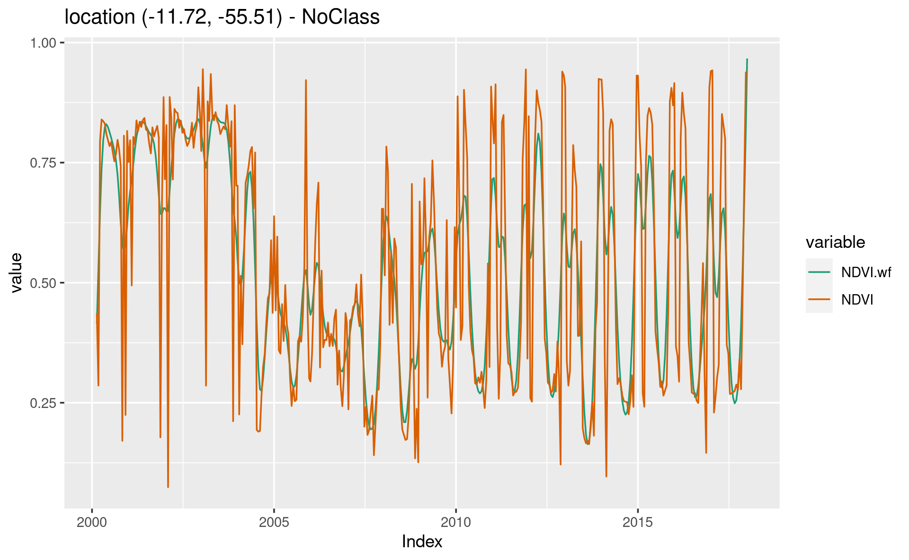

- Preface
- 1 Introduction
- 1.1 Workflow
- 1.2 Handling Data Cubes in sits
- 1.3 Handling satellite image time series in sits
- 1.4 Filtering techniques
- 1.5 Clustering for sample quality control using self-organizing maps
- 1.6 Classification using machine learning
- 1.7 Validation techniques
- 1.8 Cube classification
- 1.9 Smoothing and Labelling of raster data after classification
- 1.10 Final remarks
- 1.11 Acknowledgements
- 2 Acessing time series information in SITS
- 3 Satellite Image Time Series Filtering with SITS
- 4 Time Series Clustering to Improve the Quality of Training Samples
- 5 Machine Learning for Data Cubes using the SITS package
- 5.1 Machine learning classification
- 5.2 Data used in the machine learning examples
- 5.3 Visualizing Samples
- 5.4 Common interface to machine learning and deeplearning models
- 5.5 Random forests
- 5.6 Support Vector Machines
- 5.7 Extreme Gradient Boosting
- 5.8 Deep learning using multi-layer perceptrons
- 5.9 1D Convolutional Neural Networks
- 5.10 Residual 1D CNN Networks (ResNet)
- 6 Classification of Images in Data Cubes using Satellite Image Time Series
- 7 Post classification smoothing using Bayesian techniques in SITS
- 8 Validation and accuracy measurements in SITS
- References
4.3 Using Self-organizing Maps for Sample Quality
4.3.1 Introduction to Self-organizing Maps
As an alternative for hierachical clustering for quality control of training samples, SITS provides a clustering technique based on self-organizing maps (SOM). SOM is a dimensionality reduction technique (???), where high-dimensional data is mapped into two dimensions, keeping the topological relations between data patterns. The input data is a set of tranining samples which are typically of a high dimension. For example, a time series of 25 instances of 4 spectral bands is a 100-dimensional data set. The general idea of SOM-based clustering is that, by projecting the high-dimensional data set of training samples into a 2D map, the units of the map (called “neurons”) compete for each sample. It is expected that good quality samples of each class should be close together in the resulting map. The neighbors of each neuron of a SOM map provide information on intra-class and inter-class variability.
The main steps of our proposed method for quality assessment of satellite image time series is shown in the figure below. The method uses self-organizing maps (SOM) to perform dimensionality reduction while preserving the topology of original datasets. Since SOM preserves the topological structure of neighborhoods in multiple dimensions, the resulting 2D map can be used as a set of clusters. Training samples that belong to the same class will usually be neighbors in 2D space. The neighbors of each neuron of a SOM map are also expected to be similar.

Figure 4.1: Using SOM for class noise reduction
As the figure shows, a SOM grid is composed by units called . The algorithm computes the distances of each member of the training set to all neurons and finds the neuron closest to the input, called the best matching unit (BMU). The weights of the BMU and its neighbors are updated so as to preserve their similarity [Kohonen2013]. This mapping and adjustment procedures is done in several iterations. At each step, the extent of the change in the neurons diminishes, until a convergence threshold is reached. The result is a 2D mapping of the training set, where similar elements of the input are mapped to the same neuron or to nearby ones. The resulting SOM grid combines dimensionality reduction with topological preservation.
4.3.2 Using SOM for removing class noise
The process of clustering with SOM is done by sits_som_map() which creates a self-organizing map and assesses the quality of the samples. The function has two parts. First, it computes a SOM grid, as discussed previously, where each sample is assigned to neuron, and neurons are placed in the grid based on similarity. The second step is the quality assessment. Each neuron will be associated to a discrete probability distribution. Homogeneous neurons (those with a single class) are assumed to be composed of good quality samples. Heterogeneous neurons (those with two or more classes with significant probability) are likely to contain noisy samples.
Considering that each sample of the training set is assigned to a neuron, the algorithm computes two values for each sample:
- prior probability: the probability that the label assigned to the sample is correct, considering only the samples in the same neuron. For example, if a neuron has 20 samples, of which 15 are labeled as “Pasture” and 5 as “Forest”, all samples labeled “Forest” are assigned a prior probability of 25%. This is an indication that the “Forest” samples in this neuron are not of good quality.
- posterior probability: the probability that the label assigned to the sample is correct, considering the neighboring neurons. Take the case of the above-mentioned neuron whose samples labeled “Pasture” have a prior probability of 75%. What happens if all the neighboring samples have “Forest” as a majority label? Are the samples labeled “Pasture” in this neuron noisy? To answer this question, we use information from the neighbours. Bayesian inference we estimate if these samples are noisy based on the samples of the neighboring neurons [Santos2021].
As an example of the use of SOM clustering for quality control of samples, we take a dataset containing a tibble with time series samples for the Cerrado region of Brazil, the second largest biome in South America with an area of more than 2 million km2. The training samples were collected by ground surveys and high-resolution image interpretation by experts from the Brazilian National Institute for Space Research (INPE) team and partners. This set ranges from 2000 to 2017 and includes 61,073 land use and cover samples divided into 14 classes: Natural Non-vegetated, Fallow-Cotton, Millet-Cotton, Soy-Corn, Soy-Cotton, Soy-Fallow, Pasture, Shrublands (in Portuguese ), Savanna (in Portuguese , Dense Tree Savanna (in Portuguese ), Open Savanna (in Portuguese ), Planted Forest, and (14) Wetlands. In the example below, we take only 10% of the samples for faster processing. Users are encouraged to run the example with the full set of samples.
# take only 10% of the samples
samples_cerrado_mod13q1_reduced <- sits_sample(samples_cerrado_mod13q1, frac = 0.1)
# clustering time series using SOM
som_cluster <-
sits_som_map(
samples_cerrado_mod13q1_reduced,
grid_xdim = 15,
grid_ydim = 15,
alpha = 1.0,
distance = "euclidean",
rlen = 100
)The output of the sits_som_map is a list with 4 tibbles:
the original set of time series with two additional columns for each time series:
id_sample(the original id of each sample) andid_neuron(the id of the neuron to which it belongs).a tibble with information on the neuron. For each neuron, it gives the prior and posterior probabilities of all labels which occur in the samples assigned to it.
the SOM grid To plot the SOM grid, use
plot(). The neurons are labelled using the majority voting.

Looking at the SOM grid, one can see that most of the neurons of a class are located close to each other. There are outliers, e.g, some “Open Savanna” neurons are located amidst “Shrublands” neurons. This mixture is a consequence of the continuous nature of natural vegetation cover in the Brazilian Cerrado. The transition between areas of open savanna and shrublands is not always well defined; moreover, it is dependent on factors such as climate and latitude.
To identifies noisy samples, we take the result of the sits_som_map function as the first argument to the function sits_som_clean_samples. This function finds out which samples are noisy, those that are clean, and some that need to be further examined by the user. It uses the prior_threshold and posterior_threshold parameters according to the following rules:
- If the prior probability of a sample is less than
prior_threshold, the sample is assumed to be noisy and tagged as “remove”; - If the prior probability is greater or equal to
prior_thresholdand the posterior probability is greater or equal toposterior_threshold, the sample is assumed not to be noisy and thus is tagged as “clean”; - If the prior probability is greater or equal to
prior_thresholdand the posterior probability is less thanposterior_threshold, we have a situation the sample is part of the majority lavel of those assigned to its neuron, but its label is not consistent with most of its neighbors. This is an anomalous condition and is tagged as “analyze”. Users are encouraged to inspect such samples to find out whether they are in fact noisy or not.
The default value for both prior_threshold and posterior_threshold is 60%. The sits_som_clean_samples has an additional parameter (keep) which indicates which samples should be kept in the set based on their prior and posterior probabilities of being noisy and the assigned label. The default value for keep is c("clean", "analyze"). As a result of the cleaning, about 900 samples have been considered to be noisy and thus removed.
new_samples <- sits_som_clean_samples(som_cluster,
prior_threshold = 0.6,
posterior_threshold = 0.6,
keep = c("clean", "analyze"))
# find out how many samples are evaluated as "clean" or "analyze"
new_samples %>%
dplyr::group_by(eval) %>%
dplyr::summarise(count = dplyr::n(), .groups = "drop")#> # A tibble: 2 x 2
#> eval count
#> <chr> <int>
#> 1 analyze 784
#> 2 clean 44324.3.3 Comparing Global Accuracy of Original and Clean Samples
To compare the accuracy of the original and clean samples, we run
a 5-fold validation on the original and on the cleaned sample.we use the function
sits_kfold_validate. As the results show, the SOM procedure is useful, since
the global accuracy improves from 91% to 95%.
#> Confusion Matrix and Statistics
#>
#> Reference
#> Prediction Dense_Tree_Savanna Fallow_Cotton Millet_Cotton
#> Dense_Tree_Savanna 1109 0 0
#> Fallow_Cotton 0 45 4
#> Millet_Cotton 0 1 23
#> NatNonVegetated 0 0 0
#> Open_Savanna 1 3 0
#> Pasture 2 5 0
#> Planted Forest 3 0 0
#> Savanna 45 0 0
#> Shrublands 0 0 0
#> Soy_Corn 0 3 0
#> Soy_Cotton 0 6 5
#> Soy_Fallow 0 0 0
#> Wetlands 6 0 0
#> Reference
#> Prediction NatNonVegetated Open_Savanna Pasture Planted Forest
#> Dense_Tree_Savanna 0 1 3 15
#> Fallow_Cotton 0 0 1 0
#> Millet_Cotton 0 0 0 0
#> NatNonVegetated 50 0 0 0
#> Open_Savanna 0 1077 40 0
#> Pasture 0 21 477 0
#> Planted Forest 0 0 1 26
#> Savanna 0 34 6 1
#> Shrublands 0 26 0 0
#> Soy_Corn 0 1 3 0
#> Soy_Cotton 0 0 0 0
#> Soy_Fallow 0 2 2 0
#> Wetlands 5 37 0 0
#> Reference
#> Prediction Savanna Shrublands Soy_Corn Soy_Cotton Soy_Fallow Wetlands
#> Dense_Tree_Savanna 32 1 1 1 3 0
#> Fallow_Cotton 0 0 2 3 0 0
#> Millet_Cotton 0 0 0 3 0 0
#> NatNonVegetated 0 0 0 0 0 0
#> Open_Savanna 37 40 2 1 2 14
#> Pasture 8 0 6 1 3 0
#> Planted Forest 0 0 0 0 0 0
#> Savanna 818 3 1 0 0 2
#> Shrublands 3 643 0 0 0 3
#> Soy_Corn 0 0 531 8 1 0
#> Soy_Cotton 0 0 10 395 0 0
#> Soy_Fallow 0 0 3 0 159 0
#> Wetlands 19 5 0 0 3 251
#>
#> Overall Statistics
#>
#> Accuracy : 0.9175
#> 95% CI : (0.9103, 0.9243)
#>
#> Kappa : 0.9047
#>
#> Statistics by Class:
#>
#> Class: Dense_Tree_Savanna Class: Fallow_Cotton
#> Prod Acc (Sensitivity) 0.9511 0.7143
#> Specificity 0.9885 0.9983
#> User Acc (Pos Pred Value) 0.9511 0.8182
#> Neg Pred Value 0.9885 0.9970
#> Class: Millet_Cotton Class: NatNonVegetated
#> Prod Acc (Sensitivity) 0.7188 0.9091
#> Specificity 0.9993 1.0000
#> User Acc (Pos Pred Value) 0.8519 1.0000
#> Neg Pred Value 0.9985 0.9992
#> Class: Open_Savanna Class: Pasture
#> Prod Acc (Sensitivity) 0.8982 0.8949
#> Specificity 0.9715 0.9917
#> User Acc (Pos Pred Value) 0.8850 0.9120
#> Neg Pred Value 0.9751 0.9900
#> Class: Planted Forest Class: Savanna
#> Prod Acc (Sensitivity) 0.6190 0.8920
#> Specificity 0.9993 0.9823
#> User Acc (Pos Pred Value) 0.8667 0.8989
#> Neg Pred Value 0.9974 0.9810
#> Class: Shrublands Class: Soy_Corn Class: Soy_Cotton
#> Prod Acc (Sensitivity) 0.9292 0.9550 0.9587
#> Specificity 0.9941 0.9971 0.9963
#> User Acc (Pos Pred Value) 0.9526 0.9707 0.9495
#> Neg Pred Value 0.9910 0.9955 0.9970
#> Class: Soy_Fallow Class: Wetlands
#> Prod Acc (Sensitivity) 0.9298 0.9296
#> Specificity 0.9988 0.9872
#> User Acc (Pos Pred Value) 0.9578 0.7699
#> Neg Pred Value 0.9980 0.9967#> Confusion Matrix and Statistics
#>
#> Reference
#> Prediction Dense_Tree_Savanna Fallow_Cotton NatNonVegetated
#> Dense_Tree_Savanna 1063 0 0
#> Fallow_Cotton 0 24 0
#> NatNonVegetated 0 0 50
#> Open_Savanna 1 1 0
#> Pasture 2 1 0
#> Planted Forest 2 0 0
#> Savanna 19 0 0
#> Shrublands 0 0 0
#> Soy_Corn 0 5 0
#> Soy_Cotton 0 3 0
#> Soy_Fallow 0 0 0
#> Wetlands 7 0 5
#> Reference
#> Prediction Open_Savanna Pasture Planted Forest Savanna Shrublands
#> Dense_Tree_Savanna 2 4 6 15 0
#> Fallow_Cotton 1 0 0 0 0
#> NatNonVegetated 0 0 0 0 0
#> Open_Savanna 879 26 0 19 12
#> Pasture 9 415 0 3 0
#> Planted Forest 0 0 8 0 0
#> Savanna 22 3 0 730 0
#> Shrublands 14 0 0 0 540
#> Soy_Corn 0 2 0 0 0
#> Soy_Cotton 0 0 0 0 0
#> Soy_Fallow 1 1 0 0 0
#> Wetlands 9 0 0 14 6
#> Reference
#> Prediction Soy_Corn Soy_Cotton Soy_Fallow Wetlands
#> Dense_Tree_Savanna 1 2 0 0
#> Fallow_Cotton 0 0 0 0
#> NatNonVegetated 0 0 0 0
#> Open_Savanna 2 0 0 2
#> Pasture 4 1 5 0
#> Planted Forest 0 0 0 0
#> Savanna 1 0 0 0
#> Shrublands 0 0 0 1
#> Soy_Corn 515 3 2 0
#> Soy_Cotton 0 359 0 0
#> Soy_Fallow 2 0 150 0
#> Wetlands 0 0 7 235
#>
#> Overall Statistics
#>
#> Accuracy : 0.9525
#> 95% CI : (0.9463, 0.9581)
#>
#> Kappa : 0.945
#>
#> Statistics by Class:
#>
#> Class: Dense_Tree_Savanna Class: Fallow_Cotton
#> Prod Acc (Sensitivity) 0.9717 0.7059
#> Specificity 0.9927 0.9998
#> User Acc (Pos Pred Value) 0.9726 0.9600
#> Neg Pred Value 0.9925 0.9981
#> Class: NatNonVegetated Class: Open_Savanna
#> Prod Acc (Sensitivity) 0.9091 0.9381
#> Specificity 1.0000 0.9853
#> User Acc (Pos Pred Value) 1.0000 0.9331
#> Neg Pred Value 0.9990 0.9864
#> Class: Pasture Class: Planted Forest Class: Savanna
#> Prod Acc (Sensitivity) 0.9202 0.5714 0.9347
#> Specificity 0.9948 0.9996 0.9899
#> User Acc (Pos Pred Value) 0.9432 0.8000 0.9419
#> Neg Pred Value 0.9925 0.9988 0.9885
#> Class: Shrublands Class: Soy_Corn Class: Soy_Cotton
#> Prod Acc (Sensitivity) 0.9677 0.9810 0.9836
#> Specificity 0.9968 0.9974 0.9994
#> User Acc (Pos Pred Value) 0.9730 0.9772 0.9917
#> Neg Pred Value 0.9961 0.9979 0.9988
#> Class: Soy_Fallow Class: Wetlands
#> Prod Acc (Sensitivity) 0.9146 0.9874
#> Specificity 0.9992 0.9904
#> User Acc (Pos Pred Value) 0.9740 0.8304
#> Neg Pred Value 0.9972 0.9994An additional way of evaluate the quality of samples is to examine the internal
mixture inside neurons with the same label. We call a group of neurons sharing
the same label as a “cluster”. Given a SOM map, the function sits_som_evaluate_cluster
examines all clusters to find out the percentage of samples contained in it
which do not share it label. This information is saved as a tibble and can also
be visualized.
# evaluate the misture in the SOM clusters
cluster_mixture <- sits_som_evaluate_cluster(som_cluster)
# plot the mixture information.
plot(cluster_mixture)